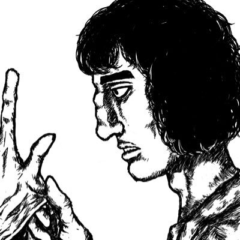

Echo37
@ax09s84751
RT @HomerArcinoma: @hakanopesu 是睾酮，是打针，是涂胶，是睾酮浓度，是红细胞压积，是多毛，是痤疮，是易性症，是父母知情同意，是“我来给你开个九宫格”。是没喉结，是没体毛，是肩窄，是脂肪，是脚太小买不到男鞋，是假胡子，是女声，是“美女你好”，是男厕门…

Homer Arcinoma
@HomerArcinoma
@hakanopesu 是睾酮，是打针，是涂胶，是睾酮浓度，是红细胞压积，是多毛，是痤疮，是易性症，是父母知情同意，是“我来给你开个九宫格”。是没喉结，是没体毛，是肩窄，是脂肪，是脚太小买不到男鞋，是假胡子，是女声，是“美女你好”，是男厕门口，是女厕隔间，是商场镜子，是“羡慕